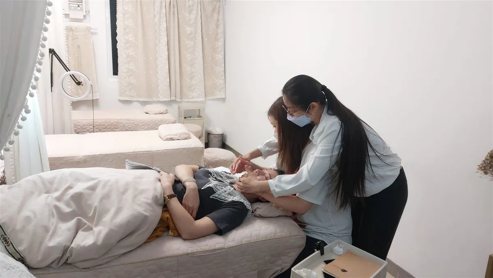

The Bojin Journal · Rituals & routines
How Often Should You Do Gua Sha or Bojin? (Less Than You’d Think)
Here’s the thought almost every woman has after her first good session: if a little bit of this feels good, I should do it every single morning.
About twice a week, with rest days between. Each session takes about a minute per area, per side: three slow passes with a bojin stick, a gua sha stone or your fingertips. Start with one area. Daily practice isn’t better, because facial skin is thin and needs time to recover between sessions. This is gentle self-care, not medical care.
I understand the instinct completely. When something finally makes your face feel softer and more awake, you want to hold onto it. So you reach for the stick every day, sometimes twice, thinking you’re being diligent.
I want to gently take that idea off your plate. The answer I give every student is about twice a week. Learning to hold back is part of the skill.
“Twice a week is enough. This is skin we’re working on. Too much pressure or too many sessions can backfire. What matters is the right pressure, the right angle, and time for the skin to recover.”Yu-Ting Lan, to her students
Why “every day” feels right, and why it isn’t
The logic seems airtight. Exercise works because you show up often. Flossing works because you do it every night. So face work should follow the same rule.
Facial skin plays by different rules. It’s thin, and thinnest on the upper eyelid: a study that measured skin samples from 15 spots on the face found brow and forehead skin about 2.8 times thicker than eyelid skin (Ha et al., 2005). After menopause it also holds moisture and bounces back a little more slowly. When you work the same area day after day, that thin skin never gets a quiet stretch to settle.
So let me say the myth out loud: daily practice doesn’t give you faster results. The care you bring to each session matters far more than how many sessions you fit in.
What “too much” looks like
Overdoing it rarely announces itself on day one. It shows up as small signs that pile up over a week or two:
- Skin that still feels tender or warm when your next session comes around.
- Redness that lingers for hours instead of fading within a few minutes.
- Any bruise, mark or broken capillary. On the face, you want none of these.
- Pressing harder each time because the last session “didn’t do enough.”
If you notice any of these, take a few extra days off and come back with lighter pressure. If a mark doesn’t fade or anything worries you, check with your doctor. The normal vs. warning-sign guide goes through this in detail.
Gua sha, bojin or fingertips: does the tool change how often?
Not much. The tool changes what you can reach and how precise you can be. Your skin needs the same rest whichever one you hold. Here’s how I teach all three:
All three: about twice a week, about a minute per area, per side. What changes is what to watch out for:
| Tool | Watch out for |
|---|---|
| Fingertips | Tired hands. They mostly move the skin surface. |
| Gua sha stone | Dragging if the skin is dry, and red marks from pressing hard. |
| Bojin stick | The rounded tip is precise. Use three slow passes, and keep it off the eyelid and eyeball. |
This is how Yu-Ting teaches it. Other gua sha teachers suggest different schedules; whichever you follow, let your own skin have the final say. Gua sha and bojin do different jobs, and you can start with the stone you already own.

What a sensible week looks like
Picture two gentle sessions spread across your week, with the days between left alone:
| Day | What you do |
|---|---|
| Monday | Session: one area, about a minute per side |
| Tuesday–Wednesday | Rest. Your usual skin care only. |
| Thursday | Session: same area, same order |
| Friday–Sunday | Rest. Notice how your face feels. |
Any two days that sit easily in your life will do. Rest days don’t mean your face is “recovering” from something it needed to get rid of. Nothing is being flushed out. Your skin is simply getting a quiet stretch, and that’s the whole reason.
How long each session takes
About a minute per area, per side: three slow passes on one side, then the same on the other. That’s practice time, not a promise of how fast you’ll see a change.
| What you work | Both sides |
|---|---|
| One area | About 2 minutes |
| Two areas | About 4 minutes |
| Three areas | About 6 minutes |
Many facial routines online run 15 or 20 minutes. You don’t need that. A longer session usually means more passes over the same thin skin, which is exactly what the rest days protect you from.
Read your skin before each session
Before you begin, rest two fingers lightly on your cheek or jaw. Does the skin feel calm, or still a little tender or warm from last time? Calm means go. Tender means wait a day.
Then try a 10-second mirror check. In even light, relax your face and compare the two sides: which brow sits lower, which side of the jaw looks heavier? Start your session on that side. It keeps you working one area with intention instead of rubbing the whole face.
One more honest note. Fingertips and most home tools mostly move that top layer of skin, a millimeter or two deep. In my classes, tightness that comes back soon after a session is often being pulled in from elsewhere: the top of the head, the base of the skull, the jaw or the temples. Pressing harder or more often won’t reach that. Working in the right order will, and that’s what the method teaches.
Five steps for this week
If you have a jade or rose quartz gua sha stone in a drawer, that’s a fine place to begin. The method matters more than the object in your hand.
Pick your two days
Space them out: Monday and Thursday, or Tuesday and Saturday. Leave a couple of days between them.
Choose one area
Start with the area that bothers you most. You can add a second one later, once your skin stays calm between sessions.
About a minute per side
Three slow passes on one side, then the other. Use a little oil or cream so nothing drags.
Check your pressure
Enough to reach the tension, never enough to hurt. Not featherlight, not forceful. If it hurts, ease off.
Leave the off days alone
No extra sessions to “catch up.” The rest days are part of the practice.
Honest expectations
Let me be straight with you. This is gentle, and any change is gentle and temporary. You may notice your face feels softer and looks a little more rested after a session; that fades, and it comes back as you keep a steady rhythm over weeks. It isn’t an overnight change, and it fades without the habit. It’s a small habit that rewards consistency, not intensity.
Bojin is a method built on order, angle, position and the right pressure. It comes from a hands-on tradition I learned and taught in Taiwan, and it asks for patience more than effort.
Quick answers
How often should you do facial gua sha?
About twice a week is plenty for most people, with rest days between. Facial skin is thin, and daily scraping or pressing can leave it tender. That's how Yu-Ting teaches it; other gua sha teachers may suggest different schedules, so let your own skin have the final say.
How often should you do bojin?
About twice a week. Each session takes about a minute per area, per side, three slow passes. Start with one area and add more only when your skin stays calm between sessions.
Can you do gua sha or bojin every day?
You can, but more often isn't better. Too much pressure or too many sessions can work against your skin. Two well-spaced sessions a week are kinder to your skin and easier to keep up.
How long should each session be?
About a minute per area, per side. One area on both sides takes about two minutes; three areas take about six. Longer sessions don't give better results.
How do I know if I'm overdoing it?
Your skin tells you. If it still feels tender, warm or sensitive when your next session comes around, or if you see redness that lingers or a mark, wait a few more days and use less pressure.
See the pace before your first session
In the free 1:18 demo, Yu-Ting works one step just above the brow at real speed. Watch how light her pressure is and how slowly she moves, then use that pace on your two days this week.
Watch the free 1:18 demoNew to bojin? Start here: find your area, learn the method, and see what your first week looks like.
Yu-Ting Lan is a Taiwan-based international bojin instructor and the founder of Héhé Studio. She has taught her bojin method to more than a thousand students, from complete beginners to grandmothers, across Taiwan, Hong Kong and Malaysia.